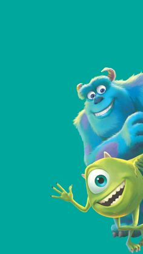

Choose Your Side Character!


Chances are you've watched a Disney movie at some point in time in your life. If not, then you are missing out! It was a defining moment in a lot of childhoods for over 20+ years now! It's brought smiles, frowns, tears and laughter!

This page serves as a reminder for all the underdogs and forgotten characters. It serves as a place to recognize many side characters and supporting roles within the Disney universe. These characters have been forgotten but have been pivotal in many of the Disney films. Below is a list of the characters to help refresh your memory. Take a look at the list of characters from the dropdown, select a name, and click a button to display the image of this long and forgotten character!